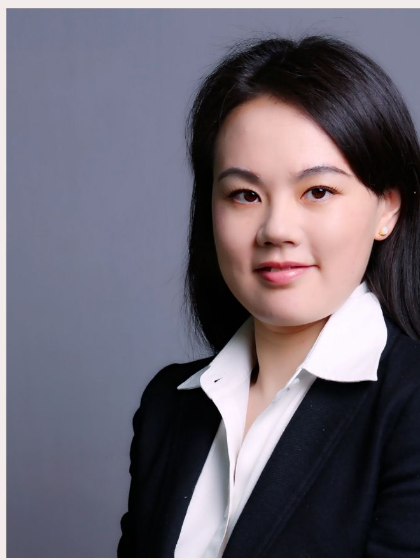
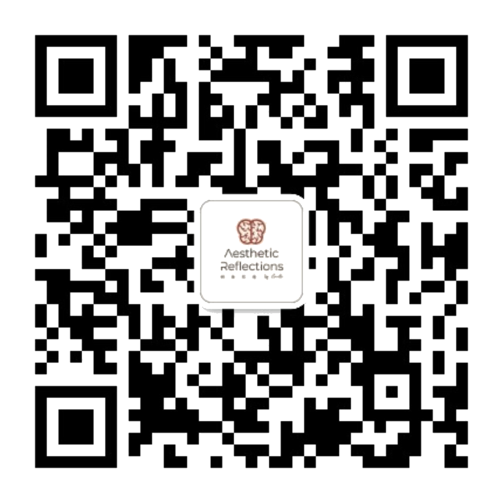
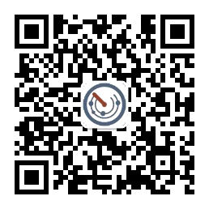
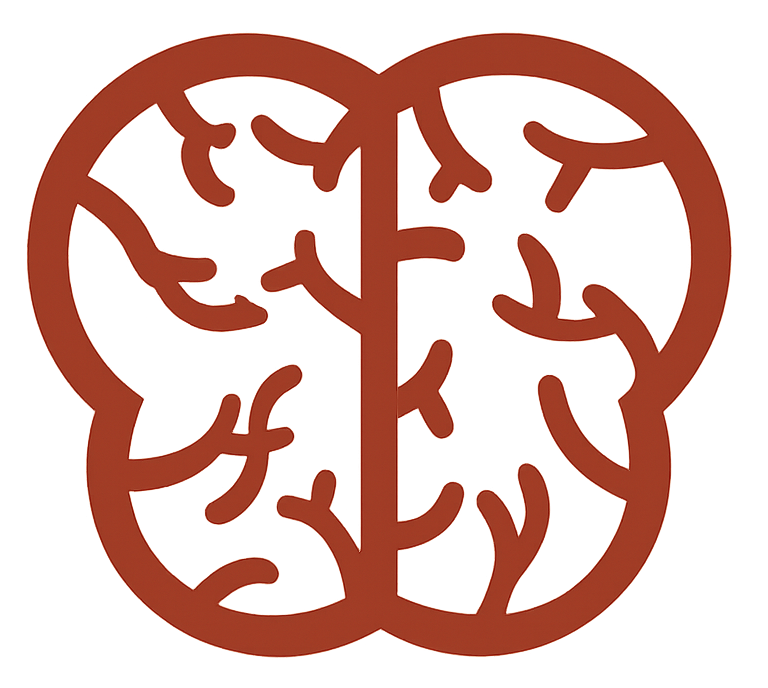

AESTRAT is a boutique strategic advisory firm working exclusively with upstream medical-aesthetics brands in China — device makers, injectable manufacturers, clinic groups and post-market product owners.
Two disciplines under one roof — medical strategy and marketing strategy, held in the same room. Engagements are led by the founder, a physician turned strategic operator. Most run twelve to twenty weeks.
| 01Market strategy市场策略 | 02Medical support医学支持 | 03Sales management销售管理 | 04Organization development组织发展 | |
|---|---|---|---|---|
| 00Pre-launch上市前期 | Research, segmentation, business model, pricing path, promotion plan | Literature, clinical reports, KOL consensus, indication & AE protocol design | Sales org architecture, KPI allocation, bonus policy, sales planning | Executive hiring, performance & incentive systems, crisis PR, culture |
| 01Post-launch上市后 | Promotion decks, sales collateral, competitive testing | Speaker systems, medical courses, expert content | Activity management, capability models, KA & distributor training | Talent training, job-level optimization, executive development |
| 02Scale持续赋能 | Operational review, business-model innovation, portfolio strategy | Ongoing scientific support | As-needed enablement | Org diagnostic, talent inventory, diversified incentives |

A medical doctor turned strategic operator. Most upstream brands have either a strong scientific team or a strong commercial team — the firm's value is the bridge between them, held in one person.
Trained clinically at Shanghai Jiao Tong University School of Medicine, with an EMBA from CEIBS. Multi-year marketing, medical and training leadership across Galderma, INNO and Moyang Biotech, following commercial roles at Merck, Medtronic, J&J and Baxter.


